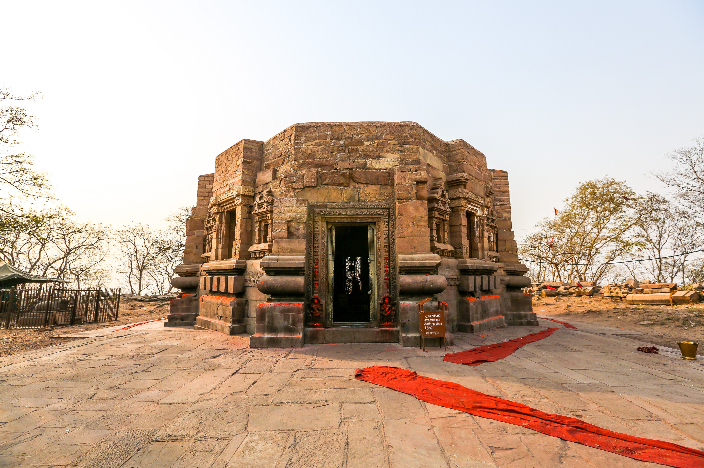
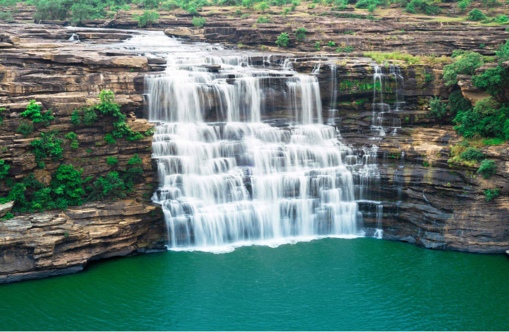

The temple is considered as the ‘oldest Functional' temple of the world as rituals have been performed here without a break.
Maa Mundeshwari Devi Temple is dedicated to Lord Shiva and Shakti and is positioned in the Mundeshwari Hills. The temple also has deities of Ganesha, Surya and Vishnu. The Archaeological Survey of India (ASI) dates the temple to 108 AD and has been a protected monument since 1915. Mundeshwari Temple is the oldest specimen of the Nagara style of temple architecture.
Around the seventh century AD, Shaivism became the prevalent religion and Viniteswara, which was a minor deity, emerged as the presiding deity of the temple.The Chatur Mukhalingam (Lingam with four faces) representing him was accorded the central place in the temple, which it holds even now.

The Karkatgarh Waterfall was a crocodile hunting place for Mughal rulers and British officials who also came to enjoy the beautiful flora and fauna around the place. British officials constructed a dak bungalow with a view on the 300 feet wide and 100 feet high waterfall. British officials Henry Ramsay mentioned it as the finest fall surrounded by beautiful sceneries. The fall is now part of the Kaimur Wildlife Sanctuary situated in the Kaimur mountain range; this waterfall spreads the dazzling shade of the beauty. It is located in the Chainpur block which is adjacent to the border of Uttar Pradesh.